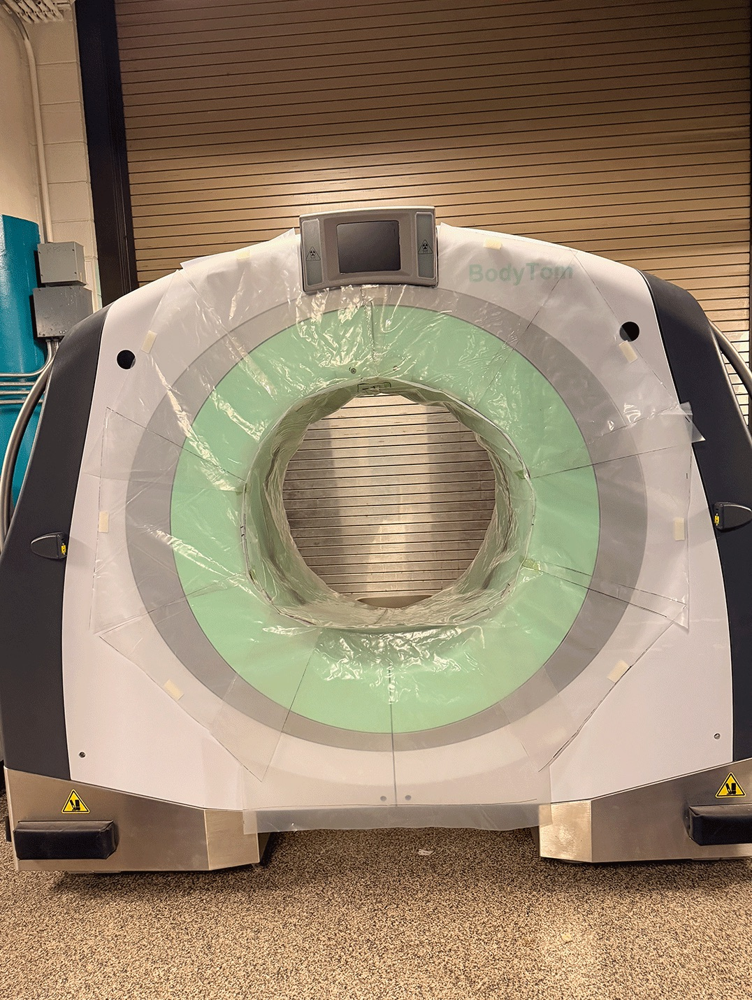
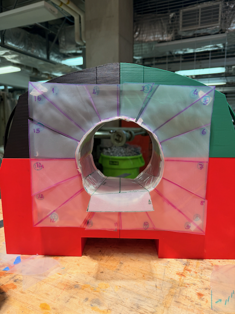
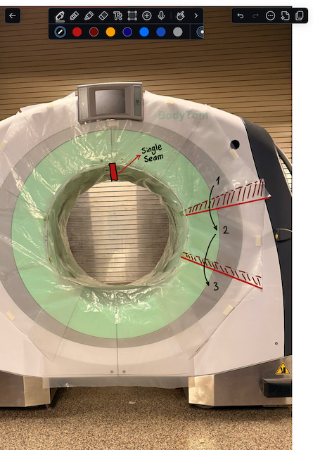
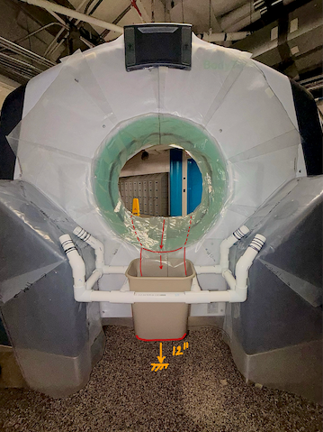
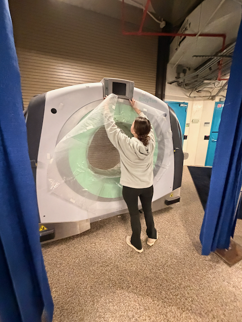

Product Design · DSGN 384 · Northwestern
WATERGUARD
"What would you do if your client said they want to scan a 2,000 lb whale in a CT scanner?"
Product Design · DSGN 384 · Northwestern
"What would you do if your client said they want to scan a 2,000 lb whale in a CT scanner?"
Goal
Design a removable waterproofing liner and runoff collection system for a CT scanner used with live aquatic animals at a major aquarium in IL
Role
Designer + Fabricator
Skills
Outcome
Setup time cut from 45 min to under 3 min (>90% reduction) · zero water contact · zero radiographic artifacts · full-scale prototype installed on-site
A major aquarium in IL needed to scan live aquatic animals in a CT scanner designed for dry operating rooms. Their team was spending 45+ minutes improvising a plastic-and-tape moisture barrier before every procedure — fragile, inconsistent, and stressful for the animals. The goal was to design a clinician-ready waterproofing system: fast to install, fully removable, and guaranteed not to interfere with the imaging beam or require any permanent modifications to the scanner.
CT scanners are built for dry operating rooms, not aquariums. When our client needed to scan live aquatic animals, their team spent 45+ minutes improvising a plastic-and-tape barrier before every procedure – fragile, unrepeatable.
My team was tasked with designing a clinician-ready replacement.

Two subsystems: gantry waterproofing and runoff collection. The harder problem was the gantry — sealed without interfering with the imaging laser, without permanent modifications, fast enough to not stress the animal.

Built a dimensionally accurate 3D model of the NeuroLogica BodyTom from manufacturer specs. Modeled early design directions and assemblies to evaluate geometry before committing materials.
Led the physical prototype build. Heat-welded the majority of the final liner, including critical seam sections. Contributed the shingled overlap geometry central to the liner's water-shedding behavior.
Ran most ideation sessions. Mediated team conflicts. Maintained a DFR focus throughout: every decision traceable to a failure mode, not just a prototype that happened to work.




Full-scale prototype installed on-site at the aquarium
Reduction in setup time
45 min → under 3 min
Water contact with protected components
Radiographic artifacts — laser integrity maintained